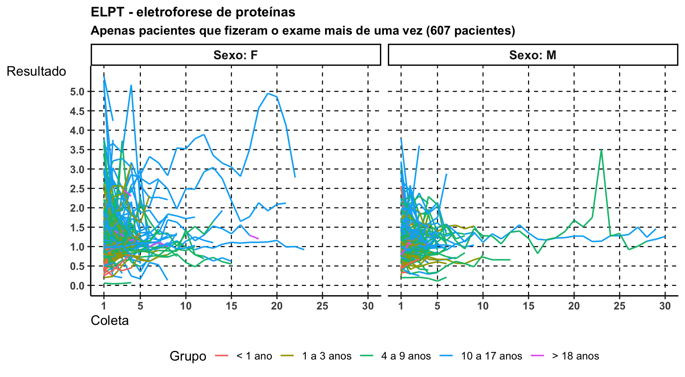

Min. 1st Qu.
"1929-10-09 00:00:00.0000" "2006-01-11 00:00:00.0000"
Median Mean
"2011-01-08 00:00:00.0000" "2010-09-18 20:03:06.6589"
3rd Qu. Max.
"2015-08-20 00:00:00.0000" "2024-10-25 00:00:00.0000"
E das datas de coleta:
Code
summary(protf$DC)
Min. 1st Qu.
"2015-01-02 00:00:00.0000" "2016-11-20 18:00:00.0000"
Median Mean
"2019-03-27 12:00:00.0000" "2019-05-31 04:49:19.2776"
3rd Qu. Max.
"2021-10-02 00:00:00.0000" "2024-10-31 00:00:00.0000"
Idade:
Code
summary(protf$IDADE)
Min. 1st Qu. Median Mean 3rd Qu. Max.
0.000 3.515 8.558 8.696 13.156 88.575
Resultados:
Code
summary(protf$RESULTADO)
Min. 1st Qu. Median Mean 3rd Qu. Max.
0.000 2.400 2.700 2.784 3.100 8.000
Para cada grupo temos sua nota de corte, e assim mostramos quantos exames (E) estão abaixo (ABA) de tal cutoff e de quantos pacientes (P) diferentes geram esses exames (junto temos a média de exames por paciente).
protf_p1 <- protf |> dplyr::filter(PRONTUARIO %in% protf_ids) |> dplyr::select(c(PRONTUARIO, SEXO, DC, GRUPO, RESULTADO)) |> dplyr::arrange(PRONTUARIO, DC) |> dplyr::group_by(PRONTUARIO, SEXO) |> dplyr::mutate(COLETA = dplyr::row_number()) |> dplyr::ungroup() |>ggplot() +aes(x = COLETA, y = RESULTADO, group = PRONTUARIO, color = GRUPO) +geom_vline(xintercept =c(1, seq(from =5, to =65, by =5), 69),linetype ="dashed" ) +geom_hline(yintercept =seq(from =0, to =7.5, by =0.5),linetype ="dashed" ) +geom_line(linewidth =0.75) +facet_wrap(~ SEXO,labeller = ggplot2::labeller(SEXO = \(x) paste("Sexo:", x)) ) +scale_x_continuous(breaks =c(1, seq(from =10, to =60, by =10), 69) ) +scale_y_continuous(breaks =seq(from =0, to =8, by =1)) +labs(x ="Coleta", y ="Resultado", color ="Grupo", title ="PROTF - Proteínas Totais e Frações",subtitle =paste("Apenas pacientes que fizeram o exame mais de uma vez", "(1738 pacientes)" ) )protf_p2 <- protf |> dplyr::filter(PRONTUARIO %in% protf_ids) |> dplyr::select(c(PRONTUARIO, SEXO, DC, CUTOFF, RESULTADO)) |> dplyr::mutate(PRONTUARIO =as.character(PRONTUARIO),ABAIXO =ifelse(RESULTADO < CUTOFF, "Sim", "Não") ) |> dplyr::arrange(PRONTUARIO, DC) |> dplyr::select(PRONTUARIO, SEXO, ABAIXO) |> dplyr::group_by(PRONTUARIO, SEXO) |> dplyr::mutate(COLETA = dplyr::row_number() |>as.factor()) |> dplyr::ungroup() |>ggplot() +aes(x = PRONTUARIO, y = COLETA, fill = ABAIXO) +geom_hline(yintercept =1:69, alpha =0.75) +geom_tile() +facet_wrap(~ SEXO,scales ="free_x",labeller = ggplot2::labeller(SEXO = \(x) paste("Sexo:", x)) ) +scale_x_discrete(labels =NULL, breaks =NULL) +scale_y_discrete(breaks =c("1", "10", "20", "30", "40", "50", "60", "69") ) +labs(x ="Prontuário", y ="Coleta", fill ="Abaixo\ndo cutoff" )protf_p1 + protf_p2 + patchwork::plot_layout(nrow =2)
Acima, cada linha vertical é um paciente. Se ela muda de cor significa que houve variação em termos de abaixo ou não do cutoff do momento (com base na idade).
Min. 1st Qu. Median Mean 3rd Qu. Max.
0.040 0.790 1.020 1.112 1.290 5.900
Medidas resumo das datas de nascimento:
Code
summary(elpt$DN)
Min. 1st Qu.
"1935-02-19 00:00:00.0000" "2006-08-17 00:00:00.0000"
Median Mean
"2011-04-29 00:00:00.0000" "2010-09-27 14:52:15.5323"
3rd Qu. Max.
"2016-01-23 00:00:00.0000" "2024-07-22 00:00:00.0000"
E das datas de coleta:
Code
summary(elpt$DC)
Min. 1st Qu.
"2015-01-06 00:00:00.0000" "2018-05-19 06:00:00.0000"
Median Mean
"2021-03-13 12:00:00.0000" "2020-09-17 11:05:53.2359"
3rd Qu. Max.
"2022-12-04 00:00:00.0000" "2024-10-31 00:00:00.0000"
Idade:
Code
summary(elpt$IDADE)
Min. 1st Qu. Median Mean 3rd Qu. Max.
0.02466 4.42877 9.37483 9.97364 13.67945 89.63388
Para cada grupo temos sua nota de corte, e assim mostramos quantos exames (E) estão abaixo (ABA) de tal cutoff e de quantos pacientes (P) diferentes geram esses exames (junto temos a média de exames por paciente).
elpt_p1 <- elpt |> dplyr::filter(PRONTUARIO %in% elpt_ids) |> dplyr::select(c(PRONTUARIO, SEXO, DC, GRUPO, RESULTADO)) |> dplyr::arrange(PRONTUARIO, DC) |> dplyr::group_by(PRONTUARIO, SEXO) |> dplyr::mutate(COLETA = dplyr::row_number()) |> dplyr::ungroup() |>ggplot() +aes(x = COLETA, y = RESULTADO, group = PRONTUARIO, color = GRUPO) +geom_vline(xintercept =c(1, seq(from =5, to =30, by =5), 36),linetype ="dashed" ) +geom_hline(yintercept =seq(from =0, to =6, by =0.5),linetype ="dashed" ) +geom_line(linewidth =0.75) +facet_wrap(~ SEXO,labeller = ggplot2::labeller(SEXO = \(x) paste("Sexo:", x)) ) +scale_x_continuous(breaks =c(1, seq(from =5, to =30, by =5), 36) ) +scale_y_continuous(breaks =seq(from =0, to =6, by =0.5)) +labs(x ="Coleta", y ="Resultado", color ="Grupo", title ="ELPT - eletroforese de proteínas",subtitle =paste("Apenas pacientes que fizeram o exame mais de uma vez", "(997 pacientes)" ) )elpt_p2 <- elpt |> dplyr::filter(PRONTUARIO %in% elpt_ids) |> dplyr::select(c(PRONTUARIO, SEXO, DC, CUTOFF, RESULTADO)) |> dplyr::mutate(PRONTUARIO =as.character(PRONTUARIO),ABAIXO =ifelse(RESULTADO < CUTOFF, "Sim", "Não") ) |> tidyr::drop_na() |> dplyr::arrange(PRONTUARIO, DC) |> dplyr::select(PRONTUARIO, SEXO, ABAIXO) |> dplyr::group_by(PRONTUARIO, SEXO) |> dplyr::mutate(COLETA = dplyr::row_number() |>as.factor()) |> dplyr::ungroup() |>ggplot() +aes(x = PRONTUARIO, y = COLETA, fill = ABAIXO) +geom_hline(yintercept =1:36, alpha =0.75) +geom_tile() +facet_wrap(~ SEXO,scales ="free_x",labeller = ggplot2::labeller(SEXO = \(x) paste("Sexo:", x)) ) +scale_x_discrete(labels =NULL, breaks =NULL) +scale_y_discrete(breaks =c("1", "5", "10", "15", "20", "25", "30", "36") ) +labs(x ="Prontuário", y ="Coleta", fill ="Abaixo\ndo cutoff" )elpt_p1 + elpt_p2 + patchwork::plot_layout(nrow =2)

Acima, cada linha vertical é um paciente. Se ela muda de cor significa que houve variação em termos de abaixo ou não do cutoff do momento (com base na idade).